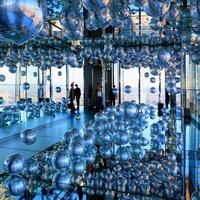
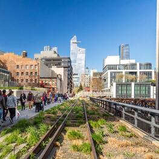

Es un puente histórico, el cual se puede cruzar caminando, en bicicleta o en auto. Durante el
trayecto se van a poder ver puestos comerciales, historia, y hermosas vistas.
Una vez que se cruza hacia brooklyn, se puede tomar un descanso allí y mismo recorrer.
Visitar algún rascacielo

En la sección de "Rascacielos" se puede obtener información sobre cada uno de ellos.
Shows de Broadway
En Nueva York se encuentran las mejores obras de teatro, con increíbles puestas en escena, y actores
y actrices de primer nivel.
Ir a presenciar alguna obra es algo que se recomienda sí o sí en alguna visita que se haga a
esta
hermosa ciudad.
Visitar los parques

En la sección de "Parques" se puede obtener información de cada uno de ellos.
Times Square
Si hay algo que caracteriza a Nueva York es Times Square. Esta atracción turística tan concurrida es
una intersección de calles en donde se
encuentran carteles luminosos, tiendas de todo tipo, shows callejeros y una gran cantidad de
turistas.